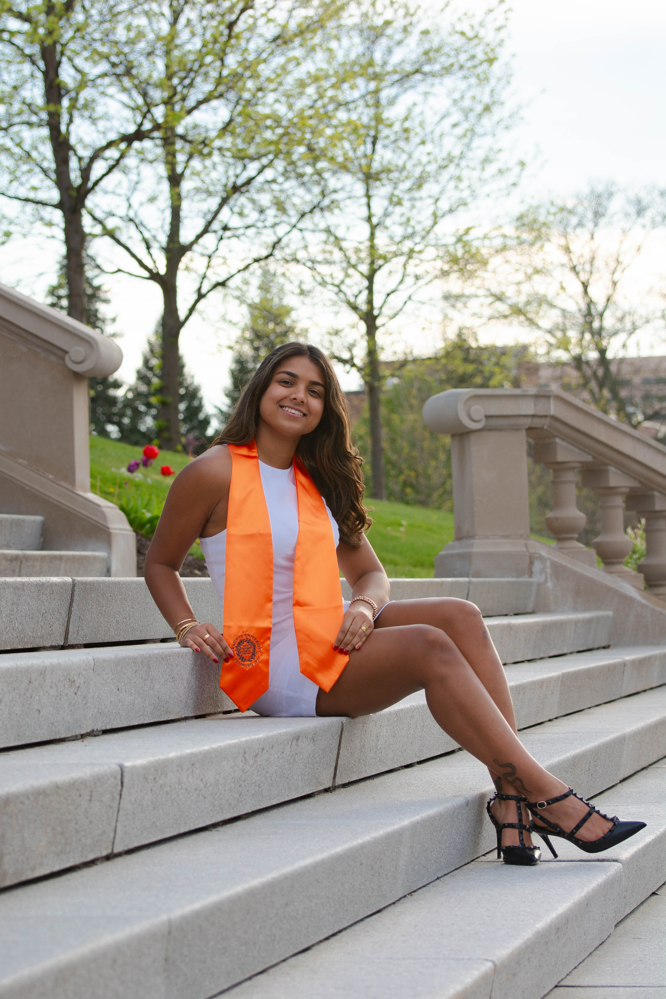
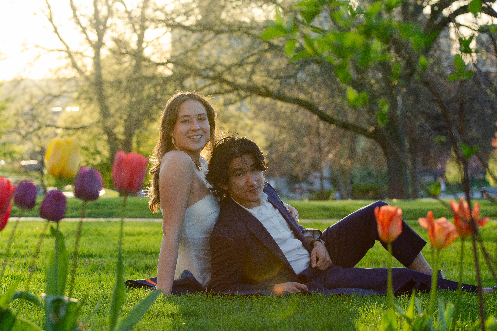
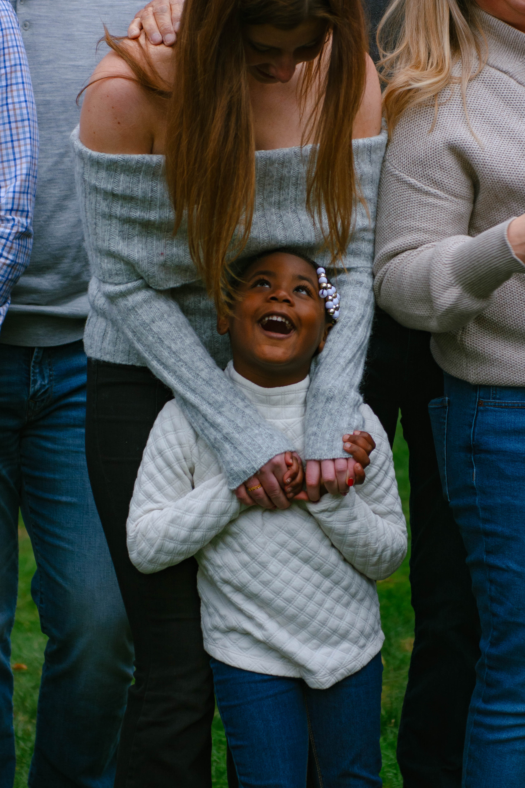
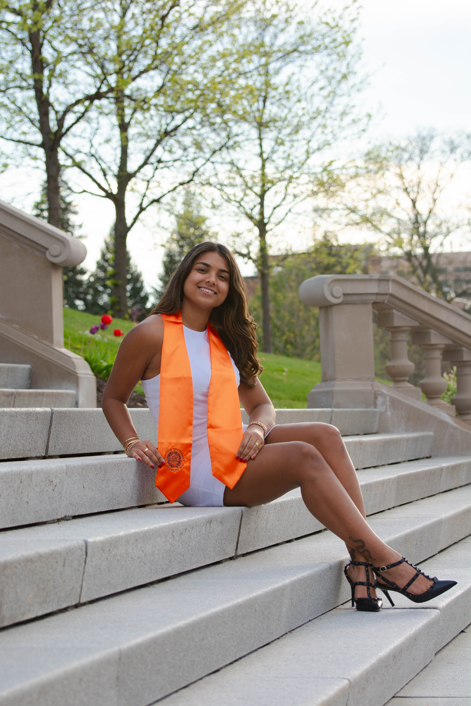
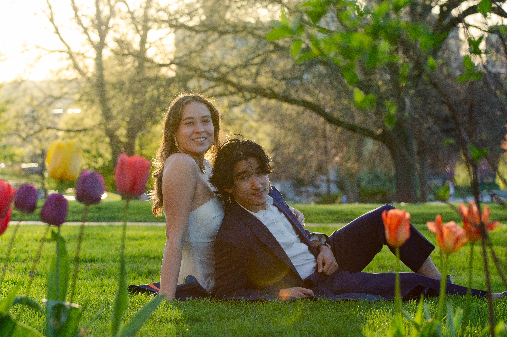
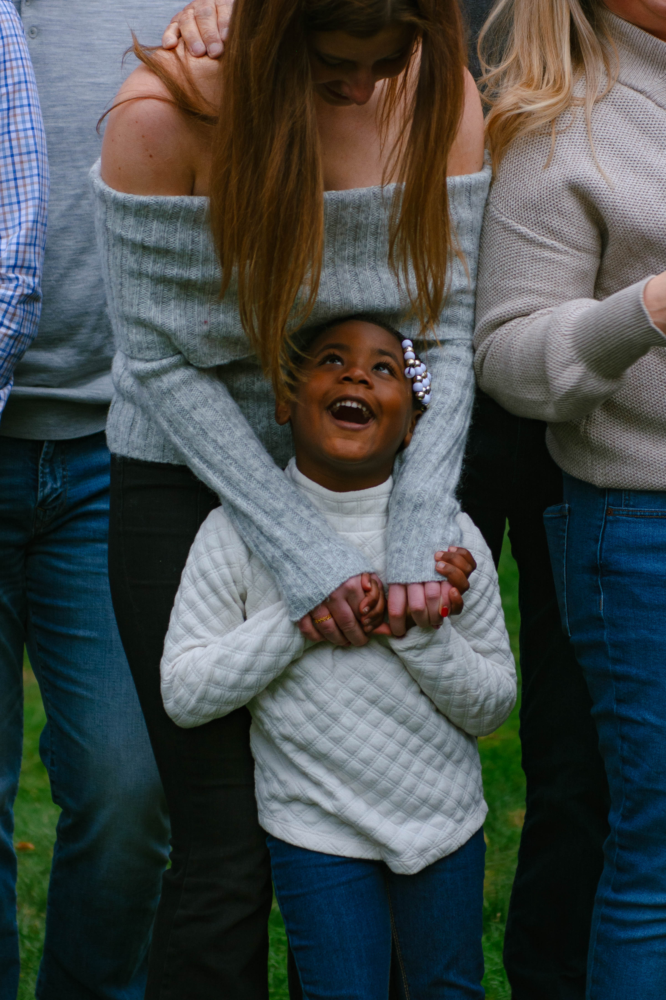
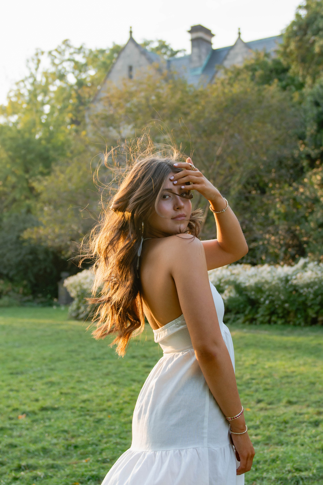
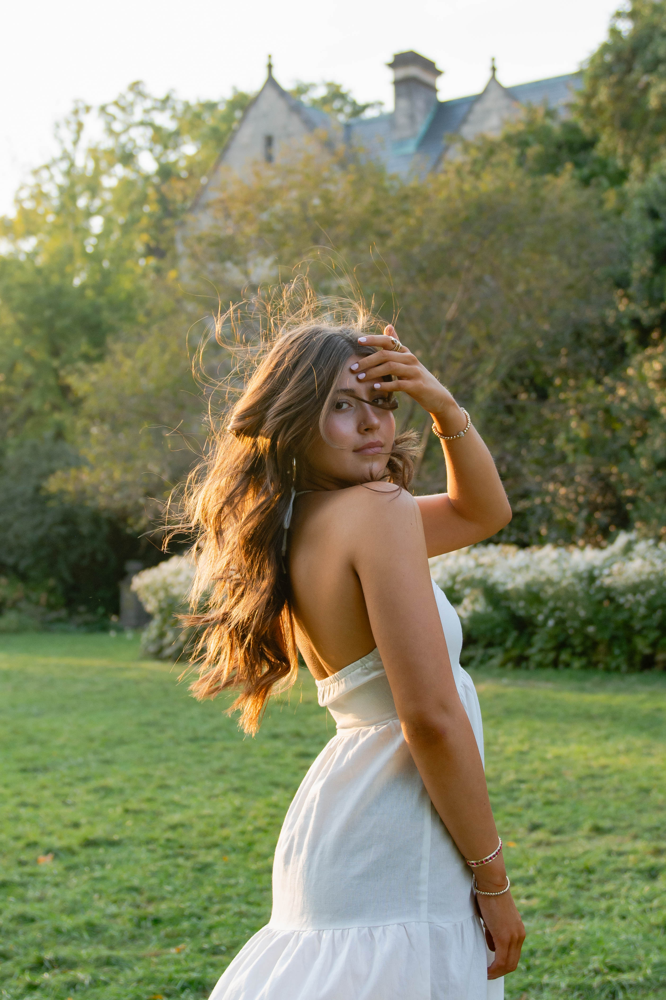
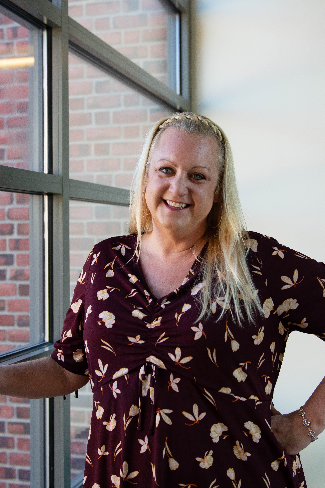
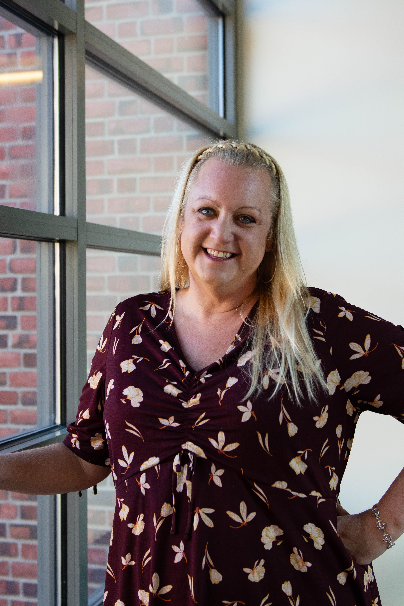

CALYSTA LEE PHOTOGRAPHY

Photos I have taken to mark the academic milestones of graduating students, celebrate gathered family members, support professionals, and capture the joys of friendship.


 





 


 
